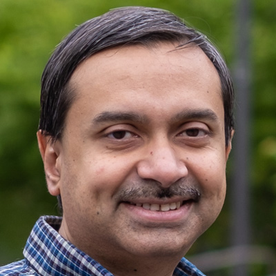

Highlight
Keynote by Raghu Ramakrishnan at FORMATS 2026
CTO for Azure Data and Technical Fellow at Microsoft.

About the Workshop
The goal of FORMATS is to bring researchers and practitioners together to shape the future of data formats. It offers a forum for sharing ideas, exploring new directions, and accelerating progress toward standardization and adoption. The workshop rethinks traditional database research to meet the needs of modern workloads and infrastructure, with topics spanning table and file formats, data encodings, operational efficiencies on modern hardware, and their role in analytics, transactions, vector processing, and AI applications.
We believe that FORMATS can foster greater collaboration between academia and industry, and help chart new research directions, adoption paths, and standardization for table, file, and data formats.
Workshop Organizers

Initial Program Committee
- Azim Afroozeh — CWI
- Chris Douglas — UC Berkeley
- Chunwei Liu — Purdue University
- Jesús Camacho-Rodríguez — Microsoft
- Weston Pace — LanceDB
- Will Manning — Spiral
- Yuanyuan Tian — Microsoft